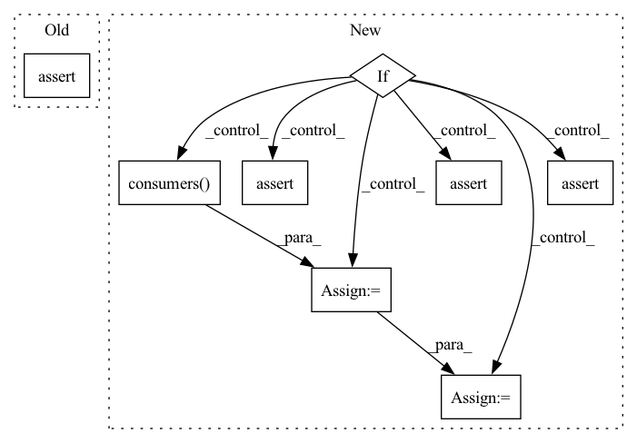

Pattern ID :31666
Before Change
:param bn_op: Batchnorm op to search for corresponding assign_moving_avg_1 op
:return: assign_moving_avg_1 corresponding with the bn op, or None if it does not exist.
assert bn_op.type in ["FusedBatchNormV3", "FusedBatchNorm", "Identity"]
assert len(bn_op.outputs) == 6 or len(bn_op.outputs) == 5 or len(bn_op.outputs) == 1
assign_moving_avg_op = None
if bn_op.type in "Identity":After Change
or (bn_op.type == "Identity" and len(bn_op.outputs) == 1)
assign_moving_avg_op = None
if bn_op.type in "Identity":
if_op = bn_op.inputs[0].op
assert if_op.type == "If"
identity_2_op = if_op.outputs[2].consumers()[0]
assert identity_2_op.type == "Identity"
sub_op = identity_2_op.outputs[0].consumers() [0]
assert sub_op.type == "Sub"
mul_op = sub_op.outputs[0].consumers()[0]
assert mul_op.type == "Mul"
assign_moving_avg_op = mul_op.outputs[0].consumers()[0]
assert assign_moving_avg_op.type in ["AssignSub", "AssignSubVariableOp"]
elif bn_op.outputs[2].consumers():
child_op = bn_op.outputs[2].consumers()[0]In pattern: SUPERPATTERN
Frequency: 3
Non-data size: 8
Instances Fragment ID: 92386689
Project Name: quic/aimet
Commit Name: 191496aa99204d35e2982ce18f41c67c4adaa29b
Time: 2022-10-25
Author: quic_kyuykim@quicinc.com
File Name: TrainingExtensions/tensorflow/src/python/aimet_tensorflow/utils/op/fusedbatchnorm.py
M Class Name: BNUtils
N Class Name: BNUtils
M Method Name: get_assign_moving_avg_1_op(1)
N Method Name: get_assign_moving_avg_1_op(1)
M Parent Class:
N Parent Class:
M File Name: TrainingExtensions/tensorflow/src/python/aimet_tensorflow/utils/op/fusedbatchnorm.py
N File Name: TrainingExtensions/tensorflow/src/python/aimet_tensorflow/utils/op/fusedbatchnorm.py
M Start Line: 763
M End Line: 780
N Start Line: 780
N End Line: 802
Before Change
beta_read = bn_op.inputs[constants.BN_OP_PARAM_INDICES["beta"]].op
assert beta_read.type == "ReadVariableOp"
return beta_read
@staticmethodAfter Change
(is mul_1 op inside BN scope)
:return: beta read op
if bn_op.type in ["Mul"]:
// For regular BN
// mul_1 -> add_1 <-- sub <-- beta_read
assert len(bn_op.outputs) >= 1, _BN_STRUCTURE_ERROR_MSG
add_1 = bn_op.outputs[0].consumers() [0]
assert len(add_1.inputs) >= 2, _BN_STRUCTURE_ERROR_MSG
sub = add_1.inputs[1].op
assert len(sub.inputs) >= 1, _BN_STRUCTURE_ERROR_MSG
beta_read = sub.inputs[0].op
elif bn_op.type in ["FusedBatchNormV3"]:
assert len(bn_op.inputs) == 5
beta_read = bn_op.inputs[constants.BN_OP_PARAM_INDICES["beta"]].op
if beta_read.type == "Switch": // tf slim bn using training tensor form
beta_read = beta_read.inputs[0].op
assert "read" in beta_read.name
else:
logger.error("Error, unknown BN op")
assert False
assert beta_read.type in ["ReadVariableOp", "Identity"] // Will be identity for tf slim BNs
return beta_read Fragment ID: 92385665
Project Name: quic/aimet
Commit Name: 04a3d26199c86efdb24da756ab9210e050855d14
Time: 2020-05-21
Author: quic_klhsieh@quicinc.com
File Name: TrainingExtensions/tensorflow/src/python/aimet_tensorflow/utils/op/fusedbatchnorm.py
M Class Name: BNUtils
N Class Name: BNUtils
M Method Name: get_beta_read_op(1)
N Method Name: get_beta_read_op(1)
M Parent Class:
N Parent Class:
M File Name: TrainingExtensions/tensorflow/src/python/aimet_tensorflow/utils/op/fusedbatchnorm.py
N File Name: TrainingExtensions/tensorflow/src/python/aimet_tensorflow/utils/op/fusedbatchnorm.py
M Start Line: 112
M End Line: 117
N Start Line: 112
N End Line: 131
Before Change
:param bn_op: Batchnorm op to search for corresponding assign_moving_avg op
:return: assign_moving_op corresponding with the bn op, or None if it does not exist.
assert bn_op.type in ["FusedBatchNormV3", "FusedBatchNorm", "Identity"]
assert len(bn_op.outputs) == 6 or len(bn_op.outputs) == 5 or len(bn_op.outputs) == 1
assign_moving_avg_op = None
if bn_op.type in "Identity":After Change
or (bn_op.type == "Identity" and len(bn_op.outputs) == 1)
assign_moving_avg_op = None
if bn_op.type in "Identity":
if_op = bn_op.inputs[0].op
assert if_op.type == "If"
identity_1_op = if_op.outputs[1].consumers()[0]
assert identity_1_op.type == "Identity"
sub_op = identity_1_op.outputs[0].consumers()[0]
assert sub_op.type == "Sub"
mul_op = sub_op.outputs[0].consumers() [0]
assert mul_op.type == "Mul"
assign_moving_avg_op = mul_op.outputs[0].consumers()[0]
assert assign_moving_avg_op.type in ["AssignSub", "AssignSubVariableOp"]
elif bn_op.outputs[1].consumers():
child_op = bn_op.outputs[1].consumers()[0] Fragment ID: 92386611
Project Name: quic/aimet
Commit Name: 191496aa99204d35e2982ce18f41c67c4adaa29b
Time: 2022-10-25
Author: quic_kyuykim@quicinc.com
File Name: TrainingExtensions/tensorflow/src/python/aimet_tensorflow/utils/op/fusedbatchnorm.py
M Class Name: BNUtils
N Class Name: BNUtils
M Method Name: get_assign_moving_avg_op(1)
N Method Name: get_assign_moving_avg_op(1)
M Parent Class:
N Parent Class:
M File Name: TrainingExtensions/tensorflow/src/python/aimet_tensorflow/utils/op/fusedbatchnorm.py
N File Name: TrainingExtensions/tensorflow/src/python/aimet_tensorflow/utils/op/fusedbatchnorm.py
M Start Line: 736
M End Line: 753
N Start Line: 744
N End Line: 766